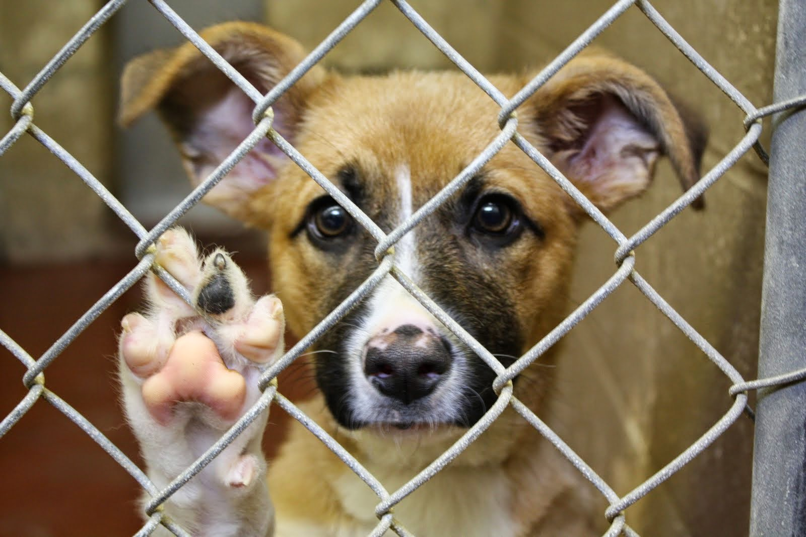

Проект Animals
Animals - проект, который направлен помочь домашним животным найти хозяина. Мы вносим вклад в развитие системной помощи в сфере защиты животных, способствуем развитию инфраструктуры некоммерческих организаций.
Для приютов
- Любой приют может обратиться за возможностью подключения к площадке Animals;
- Cервис привлекает пользователей для целей поддержки животных на платформе.
Для пользователей
- Каждый пользователь может получить доступ ко всем возможностям сервиса помощи животным и приютам;
- Любой пользователь может воспользоваться нашей поддержкой через онлайн-чат или соц.сети. Наша команда готова помочь по всем вопросам касательно подбора приюта и другим вопросам, возникающим в ходе помощи животным на платформе;
- Платформа Animals не принимает животных и не размещает объявления о пропаже/нахождении питомцев;
- Сервис сотрудничает исключительно с юридическими лицами (приютами) и занимается рекламой только подопечных приютов-партнёров.